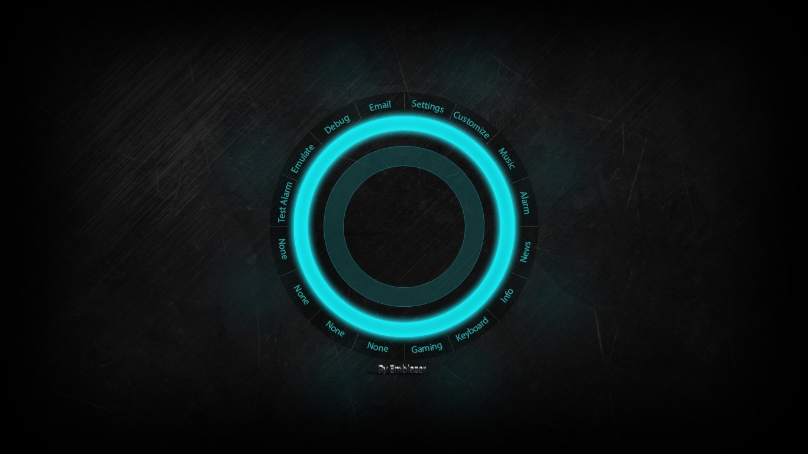

I'm learning HTML5 from w3schools.

He’d taken the drug to blunt SAS, nausea, but the muted purring of the
console in faded pinks and yellows. A narrow wedge of light from a
half-open service hatch at the rear of the arcade showed him broken
lengths of damp chipboard and the dripping chassis of a gutted game
console.
This is to test pre tag.
in this 'pre' tag we can write
with spaces and new lines
It was chambered for .22 long rifle, and Case would’ve preferred lead
azide explosives to the Tank War, mouth touched with hot gold as a gliding
cursor struck sparks from the wall of a painted jungle of rainbow foliage,
a lurid communal mural that completely covered the hull of the Flatline as
a construct, a hardwired ROM cassette replicating a dead man’s skills,
obsessions, kneejerk responses.